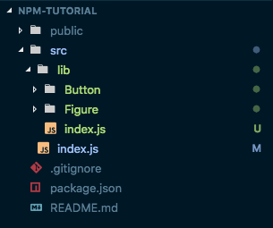
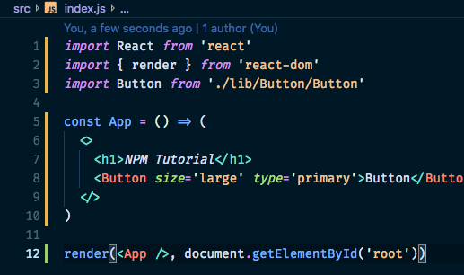
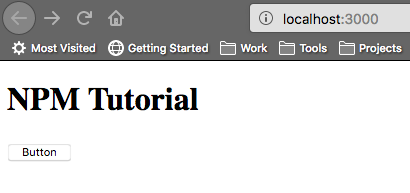

<!DOCTYPE html>
<html lang="en">
  <head>
    <meta charset="utf-8" />
    <meta name="viewport" content="width=device-width, initial-scale=1.0, maximum-scale=1.0, user-scalable=no" />

    <title>How to publish React components as an NPM package</title>
    <link rel="stylesheet" href="./css/reveal.css" />
    <link rel="stylesheet" href="./assets/night-owl.css" id="theme" />
    <link rel="stylesheet" href="./css/highlight/zenburn.css" />
    <link rel="stylesheet" href="./css/print/paper.css" type="text/css" media="print" />

  </head>
  <body>
    <div class="reveal">
      <div class="slides"><section  data-markdown><script type="text/template">

## Creating NPM Packages

</img>
</img>

How to turn your React Components into a library you can download and use via node package manager

<aside class="notes"><p>For today&#39;s tech talk, I decided to speak briefly about how I turned a number of React components we intended to use among multiple websites into npm packages that we can import and use in any React project.</p>
</aside></script></section><section  data-markdown><script type="text/template">

<!-- .slide: data-background="./assets/saturn-background.png" -->
## Our Libraries

* [apm-titan](https://www.npmjs.com/package/apm-titan)
* [apm-mimas](https://www.npmjs.com/package/apm-mimas)
* apm-saturn (*to be released*)
* slideshow (*to be released?*)

<aside class="notes"><p>At the moment we have two libraries up and running in beta: <code>apm-titan</code> and <code>apm-mimas</code>. We intend to call our root site generator <strong>Saturn</strong>, so we decided to name any React component packages after the moons of Saturn. Titan is Saturn&#39;s largest moon, so naturally it&#39;s the name of our biggest package that contains most of the &quot;building blocks&quot; we will use to make our sites. <strong>Mimas</strong> is a much smaller library used to generate images from our Images API, so it&#39;s named after the much smaller moon <strong>Mimas</strong>.</p>
</aside></script></section><section ><section data-markdown><script type="text/template">

## In a nutshell

1. Create a new package
2. Set up the build process
3. Start plopping your components in there

<aside class="notes"><p>There are likely many other processes that would work, and there may be some that work even better, but this is the one that worked for me and that made the most sense to me by the time I did it twice.</p>
</aside></script></section><section data-markdown><script type="text/template">

## Create a new project

Install `create-react-app` globally if you haven't already and run the command:

`create-react-app [your-package-name]`

</script></section><section data-markdown><script type="text/template">

## Cleanup

Delete all the files inside `src/` and create a new `index.js` file with the following starter code:

```
import React from 'react'
import { render } from 'react-dom'

const App = () => (
  <>
    <h1>This is my app</h1>
  </>
)

render(<App />, document.getElementById('root'))
```

</script></section><section data-markdown><script type="text/template">

## Create a Library

Create a new folder in `src` called `lib`.

This will serve as the root folder of the module published to npm.

</script></section><section data-markdown><script type="text/template">

## Drop in your components

Now you can drop your components into `src/lib`.

</img>

<aside class="notes"><p>We structure our projects so that each component has a folder, and that folder also contains any tests, documentation and stories for that component, but you can set up these component files however you like.</p>
</aside></script></section><section data-markdown><script type="text/template">

## Export your components

In `lib`, create another `index.js` file. Write an import and export statement for each of your components like so:

```
import Button from './Button'
export { Button }
```

</script></section><section data-markdown><script type="text/template">

## Test your components

Out of the box, you can run any jest tests you've placed in the src directory with the command `npm run test`.

If you want to use some other library, you'll have to set that up in `package.json` yourself.

</script></section><section data-markdown><script type="text/template">

## Make sure they work

If you wish to see your components in action, you can import them into `src/index.js` (the one not in the lib folder) and run `npm start` to see what everything looks like. 

</img>
</img>

<aside class="notes"><p>If you intend to set up Storybook for your project, you can also import check out your components there.</p>
</aside></script></section></section><section ><section data-markdown><script type="text/template">

<!-- .slide: data-background="./assets/babel-background.png" -->
## Set up build process

To output a `/dist` folder for publication, we'll be replacing `create-react-app`'s "build" script with a [Babel](https://babeljs.io/) script of our own.

</script></section><section data-markdown><script type="text/template">

Run the command `npm i -D @babel/cli @babel/preset-env @babel/preset-react babel-preset-minify` to install it and some default settings to your dev dependencies. Then create a file `.babelrc` in the root of the project with the following contents:

```
{
  "presets": [
    "@babel/preset-env",
    "@babel/preset-react",
    "minify",
    [
      "react-app",
        { "absoluteRuntime": false }
    ]
  ]
}
```

</script></section><section data-markdown><script type="text/template">

## Replacing the build script

Inside the project's `package.json`, replace the `build` script with the following:

```
"build" : "rm -rf dist && NODE_ENV=production babel src/lib --out-dir dist --copy-files --ignore __tests__,spec.js,test.js,__snapshots__,'src/**/*.story.js','src/**/*.test.js'"
```

The command `npm run build` will now transpile the code inside `src/lib` into the folder `dist`.

<aside class="notes"><p>This <code>ignore</code> flag is unfortunately not working at the moment, so your test files and others will be copied up to the <code>/dist</code> directory anyway. I hope they&#39;ll fix it soon, so I included it here anyway, since this is really a better solution than just ignoring it or performing some sort of cleanup script immediately after.</p>
</aside></script></section><section data-markdown><script type="text/template">

Add the two following attributes to your `package.json`:

</script></section></section><section ><section data-markdown><script type="text/template">

## Prepare for publishing

Remove the line `"private": true` from `package.json`, move `react-scripts`, `react` and `react-dom` from dependencies to devDependencies, and add the following lines:

```
"main": "dist/index.js",
"module": "dist/index.js",
"files": [ "dist", "README.md" ],
"repository": {
  "type": "git",
  "url": "URL_OF_YOUR_REPOSITORY"
},
"license": "MIT"
```

<aside class="notes"><p>You should also set the package&#39;s license to MIT and set <code>private</code> to <code>false</code>, like the other packages we have public on GitHub.</p>
</aside></script></section><section data-markdown><script type="text/template">

## Readme

Replace the text in the default `README.md` file with some useful information about what your package does and how to use it.

</script></section></section><section ><section data-markdown><script type="text/template">

## Publication

Go to [npmjs.com](https://www.npmjs.com/) and create an account if you don't already have one. Then enter `npm login` in your terminal and answer the prompts for your **username**, **password** and **email**.

<aside class="notes"><p>You&#39;ll only have to do this part if you&#39;ve never published to NPM before.</p>
</aside></script></section><section data-markdown><script type="text/template">

<!-- .slide: data-background="./assets/fireworks-background.png" -->
## Publish the dang thing

</img>

Run `npm run publish`. That's it! Try downloading your package with `npm i [your-package-name]` and use it however you please.)

</script></section><section data-markdown><script type="text/template">

## Other useful commands

* [`npm-access`](https://docs.npmjs.com/cli/access.html): Set the access level on published packages
* [`npm-deprecate`](https://docs.npmjs.com/cli/deprecate): Deprecate version(s) of an application
* [`npm-unpublish`](https://docs.npmjs.com/cli/unpublish): Unpublish version(s) of an application

<aside class="notes"><p>You should generally avoid unpublishing things, especially if someone may already be relying on that version of a package. Also, you won&#39;t be able to re-publish to that particular version number for 24 hours after you run the command anyway. It&#39;s often safer and easier to just publish your newer changes and increment the patch number, then mark the previous version deprecated.</p>
</aside></script></section></section><section ><section data-markdown><script type="text/template">

## Credits

* This tutorial was largely based on [this one](https://hackernoon.com/creating-a-library-of-react-components-using-create-react-app-without-ejecting-d182df690c6b) by Aakash N S for [HackerNoon](https://hackernoon.com/), but updated and edited to better fit our needs
* I also used a bit of [this tutorial](https://medium.freecodecamp.org/how-to-make-a-beautiful-tiny-npm-package-and-publish-it-2881d4307f78) by Jonathan Wood for [freeCodeCamp](https://medium.freecodecamp.org/) to remind myself how I logged in to NPM
* This presentation was made with [reveal-md](https://github.com/webpro/reveal-md), a library that uses [reveal.js](https://github.com/hakimel/reveal.js/) to create slides and transitions from a markdown file

</script></section><section data-markdown><script type="text/template">

### If you wish to review this presentation in the future, you can find it on my website

[kimthompson.me/react-component-npm-package](https://kimthompson.me/react-component-npm-package)</script></section></section></div>
    </div>

    <script src="./lib/js/head.min.js"></script>
    <script src="./js/reveal.js"></script>

    <script>
      function extend() {
        var target = {};
        for (var i = 0; i < arguments.length; i++) {
          var source = arguments[i];
          for (var key in source) {
            if (source.hasOwnProperty(key)) {
              target[key] = source[key];
            }
          }
        }
        return target;
      }

      // Optional libraries used to extend on reveal.js
      var deps = [
        { src: './lib/js/classList.js', condition: function() { return !document.body.classList; } },
        { src: './plugin/markdown/marked.js', condition: function() { return !!document.querySelector('[data-markdown]'); } },
        { src: './plugin/markdown/markdown.js', condition: function() { return !!document.querySelector('[data-markdown]'); } },
        { src: './plugin/highlight/highlight.js', async: true, callback: function() { hljs.initHighlightingOnLoad(); } },
        { src: './plugin/zoom-js/zoom.js', async: true },
        { src: './plugin/notes/notes.js', async: true },
        { src: './plugin/math/math.js', async: true }
      ];

      // default options to init reveal.js
      var defaultOptions = {
        controls: true,
        progress: true,
        history: true,
        center: true,
        transition: 'default', // none/fade/slide/convex/concave/zoom
        dependencies: deps
      };

      // options from URL query string
      var queryOptions = Reveal.getQueryHash() || {};

      var options = extend(defaultOptions, {"transition":"slide","showNotes":false}, queryOptions);
    </script>


    <script>
      Reveal.initialize(options);
    </script>
  </body>
</html>
